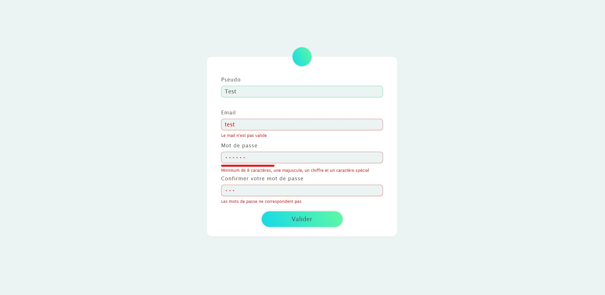

Création d'application en Javascript

Réalisation d'un formulaire "sécurisé" en Javascript avec longueur minimale du pseudo, vérification de la conformité de l'email, vérification de la complexité du mot de passe et vérification de la similitude des mots de passe saisis. Le formulaire ne peut être envoyé que si tous les champs sont remplis correctement.